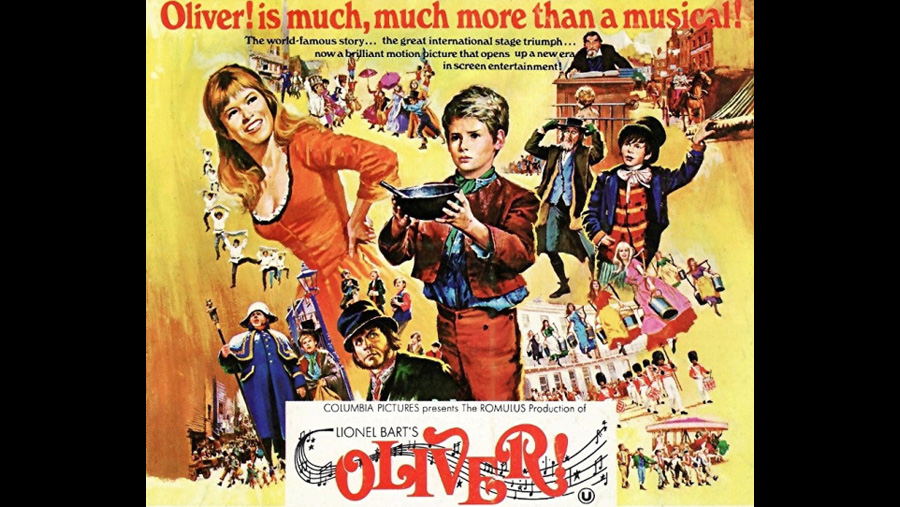

| Character | Actor |
|---|---|
| Oliver Twist | Mark Lester |
| Fagin | Ron Moody |
| Bill Sikes | Oliver Reed |
| Nancy | Shani Wallis |
| Mr. Brownlow | Joseph O'Conor |
| Mr. Bumble | Harry Secombe |
| Mrs. Corney | Peggy Mount |
| Jack Dawkins, "The Artful Dodger" | Jack Wild |
| Noah Claypole | Kenneth Cranham |
| Charlotte | Elizabeth Knight |
| Mrs. Bedwin | Megs Jenkins |
| Mr. Grimwig | Wensley Pithey |
| Magistrate | Hugh Griffith |
| Bet | Sheila White |
| Mr. Sowerberry, undertaker | Leonard Rossiter |
| Mrs. Sowerberry | Hylda Baker |
| Mr. Jessop | James Hayter |
| Workhouse Chairman | Fred Emney |
| Role | Person |
|---|---|
| Director | Carol Reed |
| Book, Music & Lyrics | Lionel Bart |
| Screenplay | Vernon Harris |
This 1968 musical drama film was directed by Carol Reed and based on the stage musical of the same name, with book, music and lyrics written by Lionel Bart. The screenplay was written by Vernon Harris. The film includes such musical numbers as "Food, Glorious Food", "Consider Yourself", "As Long as He Needs Me", "You've Got to Pick a Pocket or Two", and "Where Is Love?". Filmed in Shepperton Film Studio in Surrey, the film was a Romulus Films production and was distributed internationally by Columbia Pictures.
At the 41st Academy Awards for 1968, Oliver! was nominated for eleven Academy Awards and won six, including Best Picture, Best Director for Reed, and an Honorary Award for choreographer Onna White. At the 26th Golden Globe Awards, the film won two Golden Globes: for Best Motion Picture - Musical or Comedy, and Best Actor - Musical or Comedy for Ron Moody.
The British Film Institute ranked Oliver! the 77th greatest British film of the 20th century. In 2017, a poll of 150 actors, directors, writers, producers and critics for Time Out magazine ranked it the 69th best British film ever.